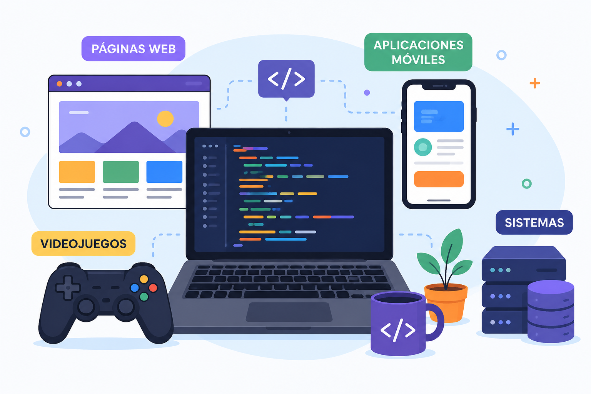

CLASIFICACIÓN Y PARADIGMAS
Nivel de Abstracción:
Los lenguajes de bajo nivel (como C o Ensamblador) están diseñados para comunicarse directamente con el hardware, ofreciendo máxima velocidad. Los de alto nivel (como Python o JavaScript) priorizan la legibilidad y el entendimiento humano.

Ventajas de los lenguajes:
Permiten automatizar tareas, crear aplicaciones y resolver problemas de manera rápida y eficiente. Además, existen lenguajes adaptados a diferentes necesidades.

Forma de Ejecución:
Los lenguajes compilados traducen todo el código fuente a un archivo ejecutable antes de correr (como C++), mientras que los interpretados leen y ejecutan el código línea por línea en tiempo real (como Python).
Paradigmas Principales:
La Programación Orientada a Objetos (POO) estructura el código en "objetos" con propiedades y acciones, y la Programación Funcional utiliza funciones matemáticas puras para lograr un software más predecible.